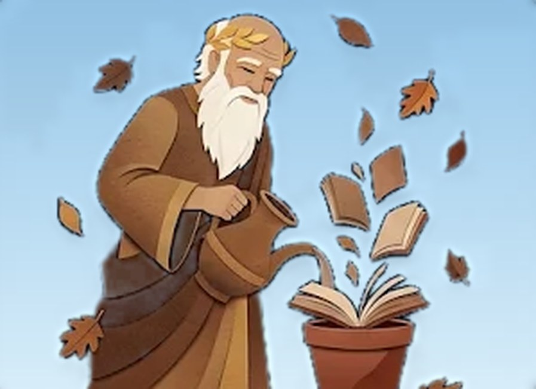
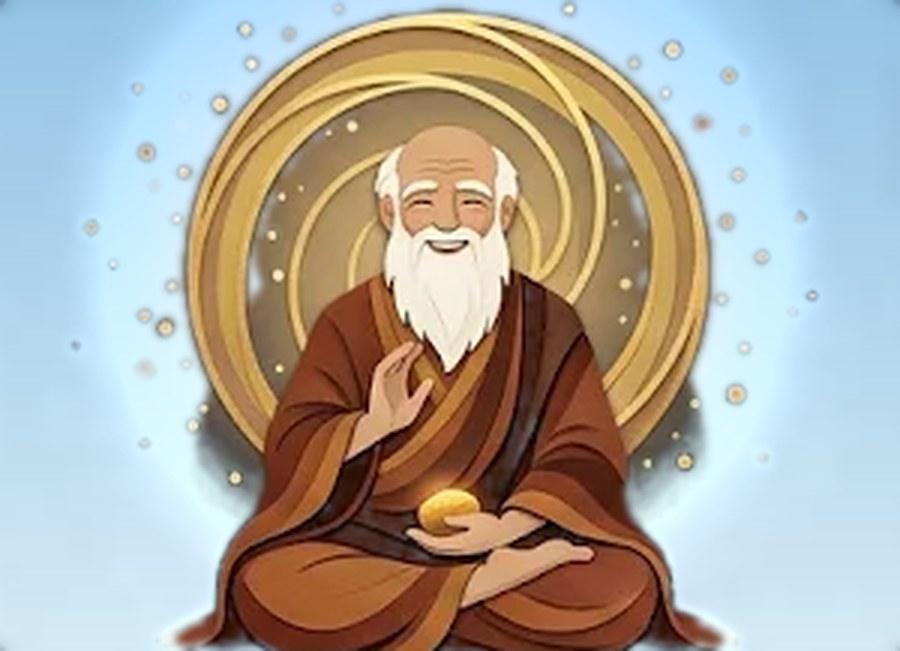
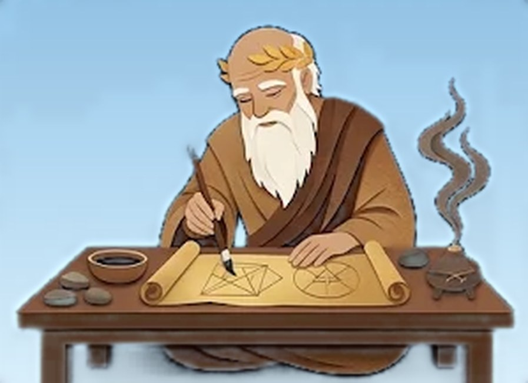
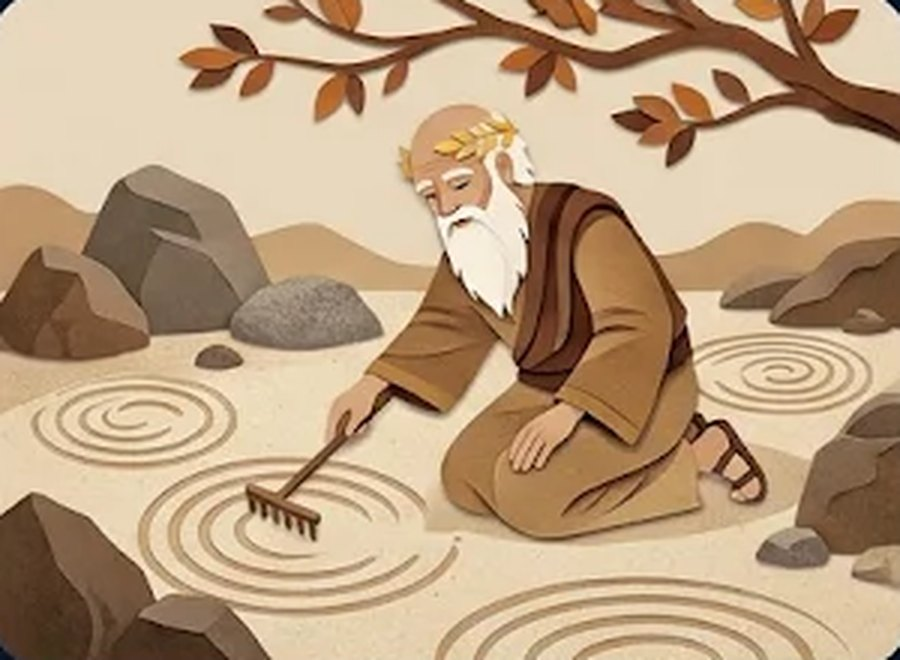
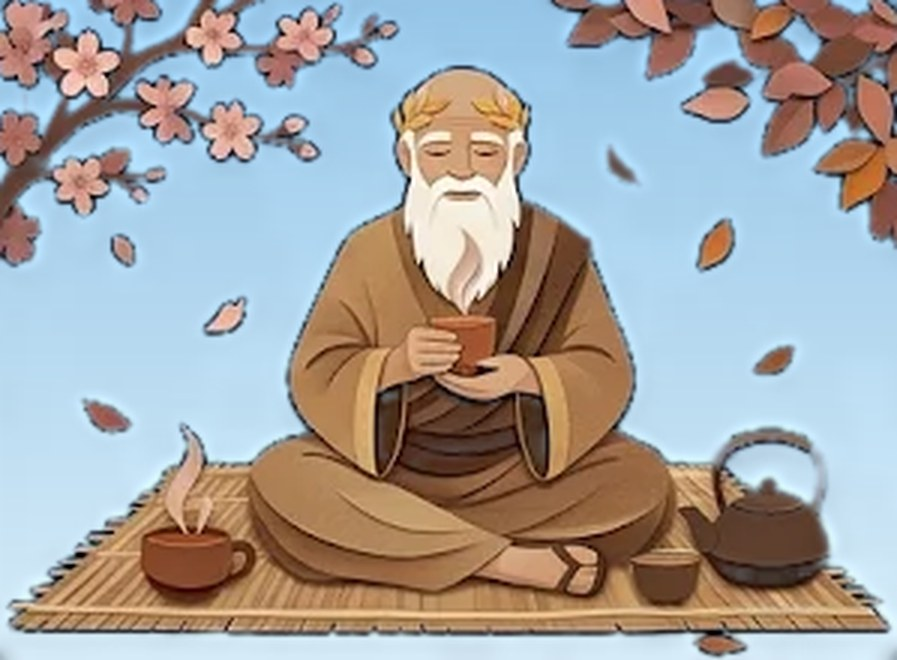
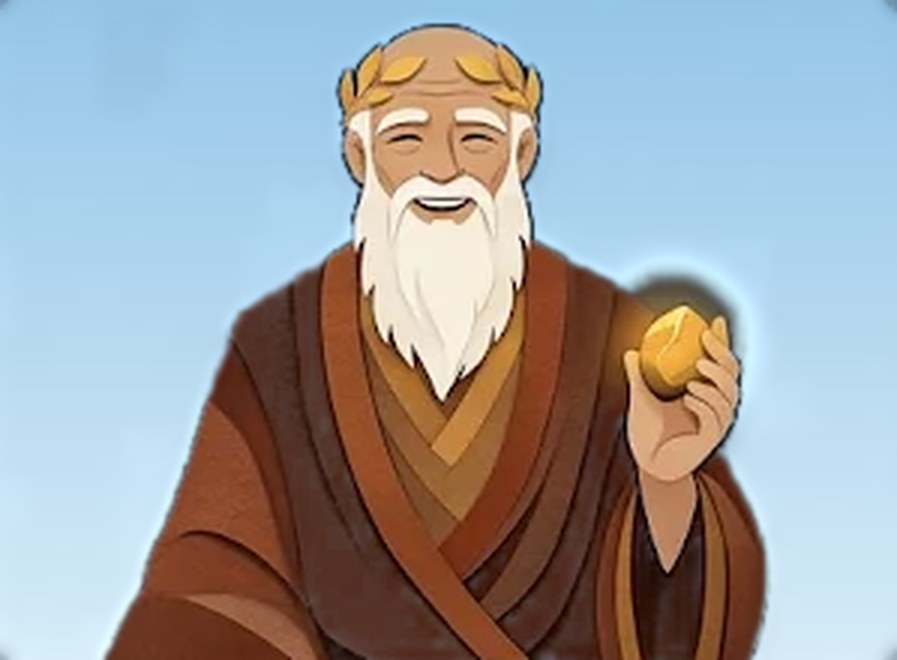

חמשת המצבים של ארצ׳י מתוך העיצוב שהבאת, כל אחד עם אנימציה משלו בשכבות נייר. הרקע הכחול הכהה הוחלף בתכלת של בוקר. אפשר להחליף בין שלושה גוונים ולבחור אחד.






בוחרים רגע ביום, וארצ׳י נפתח כמו דף מקופל, עם המצב המתאים והמשפט שלו.
שלוש משימות מחכות היום. נתחיל בהסתברות, 50 דקות.
רצף: 6 ימים